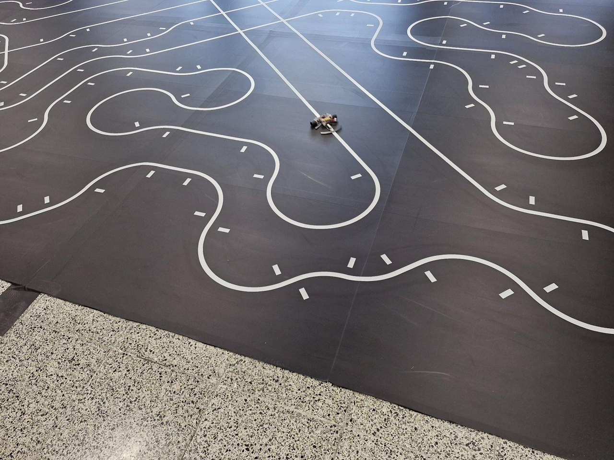
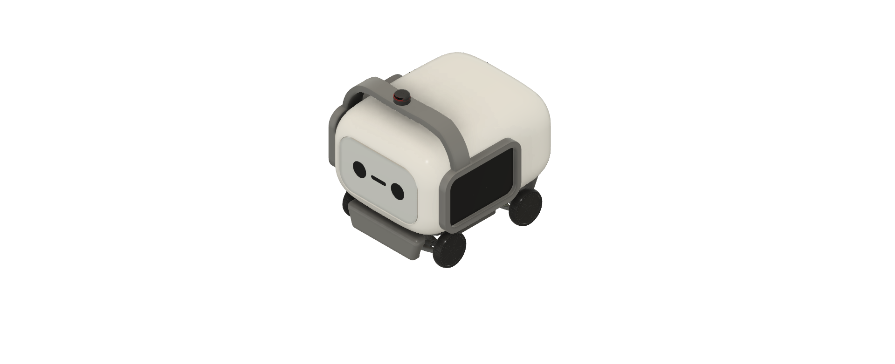
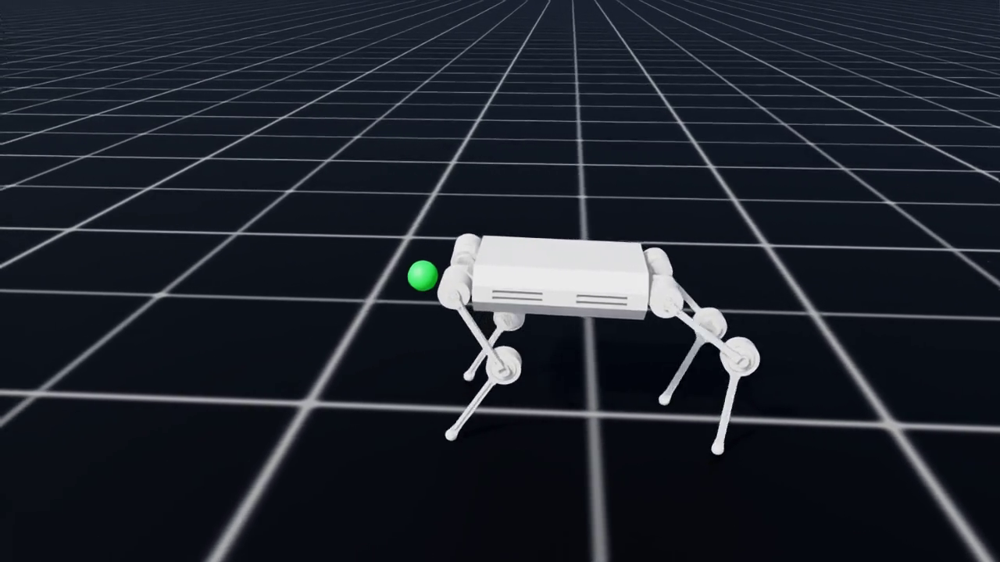
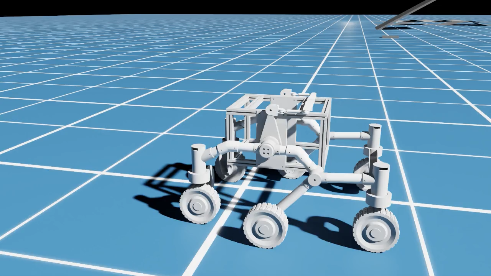

01 / THE BEGINNING

ZETIN PROJECT ARCHIVE / 01Line Tracer 라인트레이서
↗선을 따라 달리며 ZETIN의 로봇 제작 활동을 시작한 프로젝트
FROM THE FIRST LINE
ZEro To INfinite는 서울시립대학교 로봇 연구회 ZETIN에서 출발했습니다. 라인트레이서에서 쌓은 제작 경험을 바탕으로 다양한 로봇 플랫폼의 설계와 제어 기술을 확장해 왔습니다.
휴머노이드, 배달로봇, 사족보행 로봇, 드론, 재난 로봇을 개발하며 축적한 기술을 기업·기관의 목적에 맞는 R&D 프로젝트에 연결합니다.
TECHNOLOGY IN MOTION
각 플랫폼에서 축적한 설계·제어·자율주행 기술을 소개합니다.

ZETIN PROJECT ARCHIVE / 01선을 따라 달리며 ZETIN의 로봇 제작 활동을 시작한 프로젝트
AI 기반 캠퍼스 안내 및 자율보행 휴머노이드 로봇

캠퍼스 물품 배송과 광고·정보 제공을 위한 자율주행 배달로봇

ZETIN PROJECT ARCHIVE / 044족보행 로봇 플랫폼
쿼드콥터 기반 다목적 드론 플랫폼

ZETIN PROJECT ARCHIVE / 06험지주행에 특화된 6WD 4WS 재난 로봇
* 캠피·사미·버저는 디자인 렌더링 이미지입니다. 나머지 플랫폼에는 ZETIN 프로젝트 아카이브 ↗의 참고 이미지를 사용했습니다.
DESIGN · CONTROL · INTELLIGENCE
기업·기관의 요구사항과 사용 환경에 맞춰 기구 설계부터 임베디드 제어, 환경 인식과 자율주행까지 필요한 기술을 조합하고 구현합니다.
목표와 사용 환경에 맞는 기구와 플랫폼을 설계합니다.
센서와 액추에이터를 통합해 안정적인 제어를 구현합니다.
인식·자율주행·학습 기반 제어를 과제에 맞게 적용합니다.
LET’S BUILD WHAT’S NEXT.
풀고 싶은 로봇 과제가 있나요?
아이디어의 시작부터 구현까지,
필요한 기술을 함께 찾아갑니다.